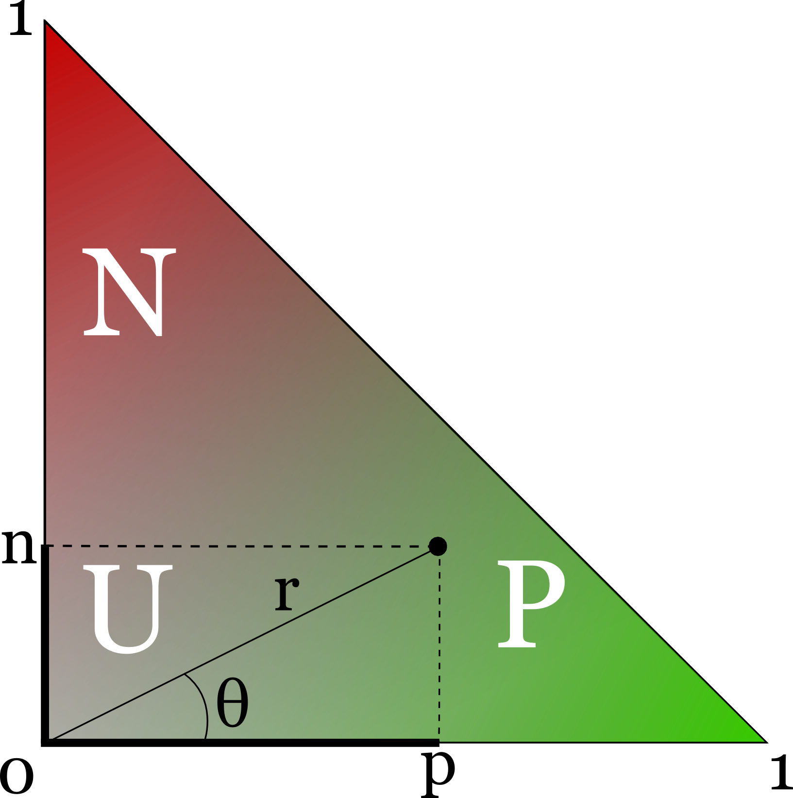
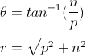
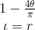

As part of the TWITA project investigation, we developed a lexicon for Sentiment Analysis called Sentix (Sentiment Italian Lexicon). The lexicon is the result of the alignment of several resources:
An entry in our lexicon consists in an italian lemma, part-of-speech (noun, verb, adjective, adverb), WordNet synset ID, a positive and a negative score from SentiWordNet, a polarity score ranging from -1 to 1, and an intensity score ranging from 0 to 1. Here is an example entry:
| lemma | POS | Wordnet synset ID | positive score | negative score | polarity | intensity |
|---|---|---|---|---|---|---|
| naturale | A | 00074346 | 0,75 | 0,125 | 0,789 | 0,76 |
In SentiWordNet the positive p and negative n polarity scores are assigned to synsets independently, that is, the sum of positive, negative and neutral score is 1, but no constraint is posed on the relative size of p and n.
Geometrically, a synset in SentiWordNet is a point in the cartesian space where its y coordinate is the positive score and the y coordinate is the negative score. Since x+y≤1, the sentiment plane is restricted to a triangle:

Intuitively, synsets that fall into the P region are "positive", synsets that fall into the N region are "negative", and synsets that fall into the U region are "neutral". However, the three regions are not clearly delimited.
Formally, given a cartesian-to-polar coordinates transformation:

We define Polarity (π) and Intensity (ι) as:

Polarity (π) ranges from -1 (totally negative) to 1 (totally positive). Intensity ranges from 0 (totally neutral) to 1 (totally polarized).
Polarity and Intensity are functions of the positive and negative scores found in SentiWordNet, thus they don't add any informationi to it. However, they are intuitive measures of lexical sentiment.
When it's not possible to perform Word Sense Disambiguation, then all senses of a word must be considered (or one can use heuristics such as taking the most frequent sense). Many words are polysemous, that is, they have multiple meanings. The meanings of a word can convey sentiments with opposite polarities. The polypathy of a lemma is a measure of the spread of its senses on the polarity scale.
One way of compute the polypathy of word is the standard deviation of the polarity of its senses, but this method does not take into account the intensity of the synsets. An alternative method is to take the mean distance of all synsets from their centroid in the sentiment plane. Two lists of Italian and English words with their polypath (computed as standard deviation of polarities) are available for downloads in the downloads page.
| Resource | Part of speech | Lemmas | Synsets |
|---|---|---|---|
| Sentix | noun | 52,257 | 12,228 |
| adjective | 3,359 | 1,805 | |
| verb | 2,775 | 1,260 | |
| adverb | 1,351 | 750 | |
| all | 59,742 | 16,043 | |
| Sentix (only aligned with MultiWordNet) | noun | 10,042 | 4,779 |
| adjective | 3,359 | 1,805 | |
| verb | 2,775 | 1,260 | |
| adverb | 1,351 | 750 | |
| all | 17,527 | 8,594 | Sentix (only aligned with Babelnet) | noun | 45,517 | 11,567 |
| adjective | 0 | 0 | |
| verb | 0 | 0 | |
| adverb | 0 | 0 | |
| all | 45,517 | 11,567 |